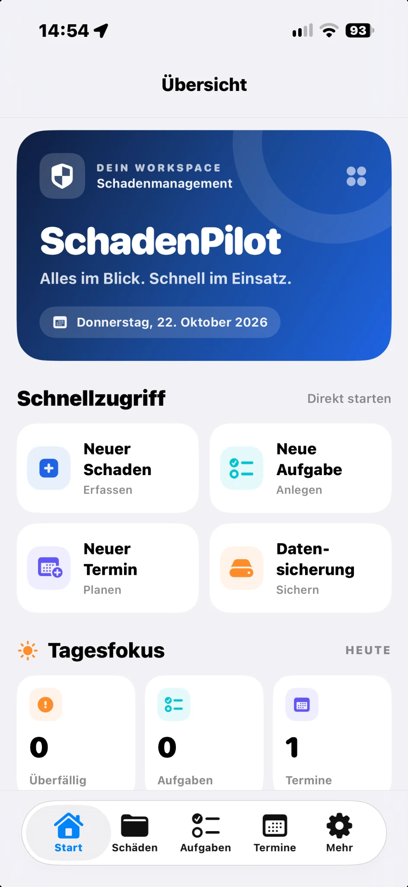
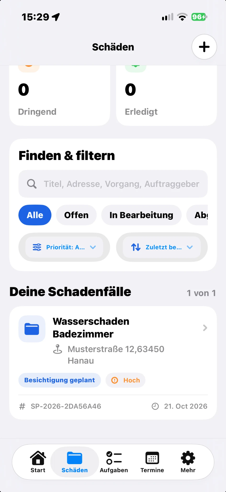
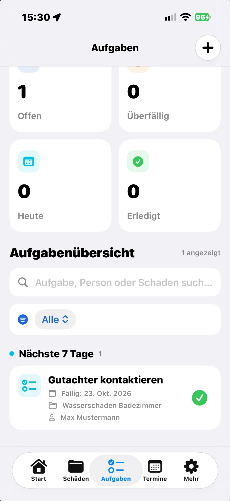
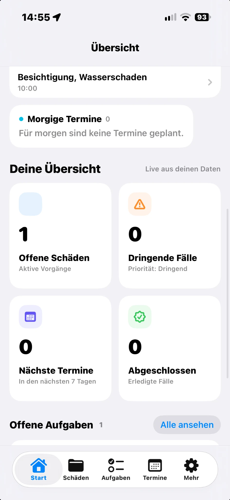

Ein Fall. Ein Überblick.
Alle wichtigen Angaben zum Schadenfall geordnet erfassen – mit Status, Priorität und zugehörigem Objekt.
Schadenakte Status Priorität
Von der ersten Schadenmeldung bis zur fertigen Dokumentation: SchadenPilot bringt Fälle, Fotos, Aufgaben und Termine an einen Ort.

Ein Wasserschaden bringt schon genug Fragen mit sich. Deine Dokumentation sollte nicht noch mehr aufwerfen.
Alle wichtigen Angaben zum Schadenfall geordnet erfassen – mit Status, Priorität und zugehörigem Objekt.
Fotos und Schadensdetails am passenden Vorgang dokumentieren, statt sie später mühsam zuzuordnen.
Aufgaben, Zuständigkeiten und Termine im Blick behalten – auch bei mehreren offenen Fällen.
Ein klarer Ablauf statt vieler einzelner Listen: von der ersten Erfassung bis zum Nachweis.
Neue Fälle anlegen, Adressen hinterlegen, Vorgangsnummern zuordnen und den Bearbeitungsstand nachvollziehen.
ERFASSEN · FILTERN · WIEDERFINDEN

Fälligkeiten, Besichtigungen und offene To-dos mit Schadenakten verknüpfen. Dringendes ist schneller erkennbar.
PLANEN · ZUORDNEN · ABSCHLIESSENFotodokumentation, digitale Raumskizzen und Berichte unterstützen eine nachvollziehbare Schadenaufnahme.
FOTOS · GRUNDRISSE · BERICHTERäume und Schadenstellen
übersichtlich erfassen.
Original-Screenshots aus der aktuellen iPhone-App. Entdecke die verschiedenen Bereiche – ganz ohne geschönte Demobilder.
Die Startseite zeigt, worauf es gerade ankommt – mit schnellen Aktionen und einer Übersicht aus deinen eigenen Daten.

Schaden erfassen, Objekt zuordnen und erste Informationen dokumentieren.
Fotos hinzufügen, Aufgaben verteilen und wichtige Termine planen.
Den Bearbeitungsstand nachvollziehen und eine verschlüsselte Datensicherung erstellen.
SchadenPilot speichert die regulären Schadenakten im aktuellen Entwicklungsstand lokal auf deinem Gerät. Für Sicherungen kannst du ein Passwort verwenden – die Dateien werden mit AES-256-GCM verschlüsselt.
Mehr über DatenschutzDie wichtigsten Informationen rund um die aktuelle Testversion.
SchadenPilot wird für iPhone und iPad entwickelt. Das Layout passt sich an unterschiedliche Bildschirmgrößen an.
Aktuell wird die App über Apple TestFlight mit eingeladenen Testpersonen erprobt. Eine öffentliche App-Store-Veröffentlichung ist noch nicht angekündigt.
Für die grundlegende Dokumentation in der App ist kein eigenes SchadenPilot-Benutzerkonto nötig. Ein iCloud-Konto ist nur für optionale Apple-CloudKit-Testfunktionen erforderlich.
Noch nicht. Die Teamfreigabe wird zunächst mit künstlichen Testeinträgen geprüft. Eine automatische Synchronisierung echter Schadenakten ist noch nicht Teil dieser Testversion.
Du kannst eine passwortgeschützte Sicherungsdatei erzeugen und an einem selbst gewählten Ort ablegen. Die Sicherung nutzt AES-256-GCM. Bewahre das Sicherungspasswort sicher auf.
Nein. SchadenPilot unterstützt die Erfassung und Organisation von Informationen. Raummaße und Skizzen sind manuelle Dokumentationshilfen, keine fachliche Vermessung oder Begutachtung.
Du möchtest die App testen, Feedback geben oder mehr über SchadenPilot erfahren? Schreib uns.
Kontakt aufnehmen